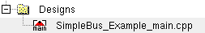

When you initially create a project, prior to its first build, the project will not have a Designs folder. When you build a project for the first time, Vista automatically recognizes any files containing the sc_main function and references them from the Designs folder that is then created. In the Browser pane, this is depicted as in the following example:

When you double-click the special Main icon, the pre-defined sc_main source file is displayed in the XEmacs editing window to the right.
Following any subsequent build, the contents of the Designs folder is updated as required.